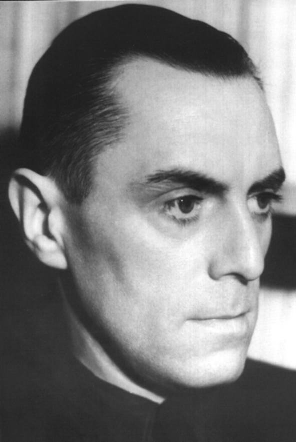

|  | JORIS VAN SEVEREN
werd op 19 juli 1894 in Wakken geboren in het gezin van notaris Edmond van Severen en Irma van de Male. Zijn middelbare studies volgt hij aan het Gentse jezuïetencollege "Sainte Barbe". Hij leest er Van Cauwelaert en Vermeylen en wordt er "vlaamsgezind". In 1912 laat hij zich inschrijven aan de universiteit van Gent, faculteit Letteren en Wijsbegeerte, voorbereidend op de rechten. Hij is er zeer actief in het Vlaamse studentenleven. Bij het begin van de oorlog 1914-1918 wordt hij opgeroepen voor het leger en staat weldra als sergeant aan het front. Hij is zeer begaan met het lot van de Vlaamse soldaten en vertegenwoordigt weldra de IIIe legerdivisie in de geheime frontbeweging. Eens officier staakt hij die activiteit niet; het kost hem strafkamp en degradatie. Op eigen aanvraag staat hij tegen het eindoffensief weer aan het front. |
Na de oorlog hervat Van Severen zijn studies te Gent maar wijdt zich in hoofdzaak aan de Vlaamse strijd en aan Ter Waarheid, een maandblad met internationale allures. Op aandringen van Cyriel Verschaeve neemt hij in 1921 voor de Frontpartij deel aan de parlementsverkiezingen en wordt tot volksvertegenwoordiger verkozen; wat hij tot 1929 blijft.
Intussen is hij vooral in West-Vlaanderen actief: hoofdman van het Katholiek Vlaams Nationaal Verbond en uitgever van De West-Vlaming. Bij iedere evolutie binnen het Vlaams-nationaal leven is hij betrokken en verdedigt hij zijn persoonlijke visie. Dat brengt hem in conflict met andere vooraanstaanden in de Vlaamse Beweging. Uiteindelijk gaat hij in oktober 1931 een eigen weg met het Verdinaso (Verbond van Dietse Nationaal-Solidaristen) dat evolueert naar een Heel-Nederlandse staatsvisie en een solidaristische maatschappelijke ordening.
Niettegenstaande zijn loyale houding tegenover België en de instructies aan zijn volgelingen om te strijden tegen iedere aanvaller, wordt hij bij het uitbreken van de Tweede Wereldoorlog als "staatsgevaarlijk" aangehouden en naar Frankrijk weggevoerd. Te Abbeville wordt hij, bij een poging een einde te stellen aan de moord op zijn lotgenoten, zelf neergeschoten. Daar ligt hij begraven naast de arbeider Jan Rijckoort, zijn medewerker, samen met hem vermoord op 20 mei 1940.
Joris van Severen en zijn beweging kwamen reeds in talrijke historische
werken aan bod. Het sedert 1997 verschijnend Jaarboek
Joris van Severen wil d.m.v. publicaties van studies, getuigenissen
en bronnen over Joris van Severen, zijn persoon, zijn gedachten,
zijn invloed en zijn werk de Van Severen-studie bevorderen en aanmoedigen.